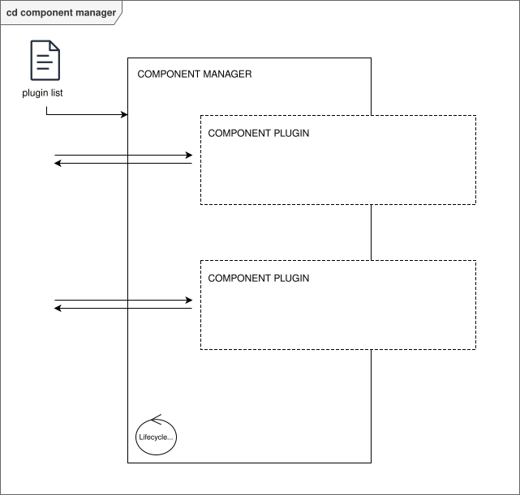
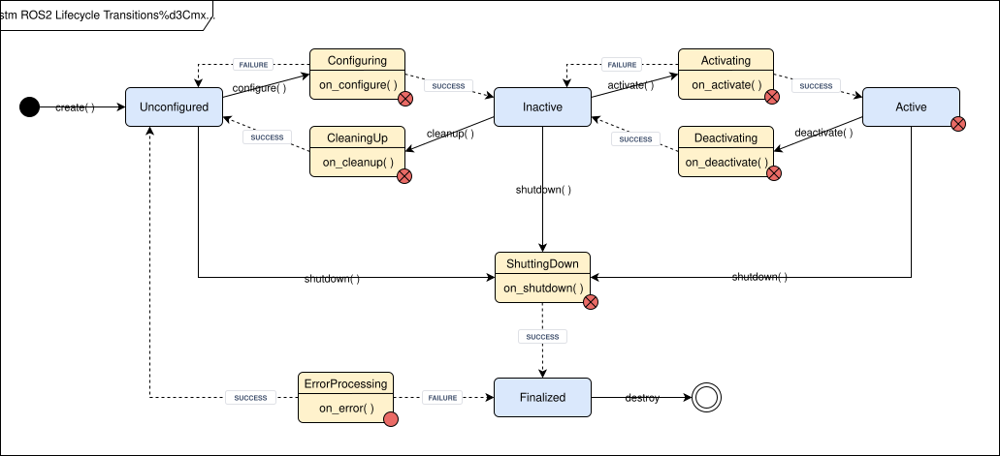
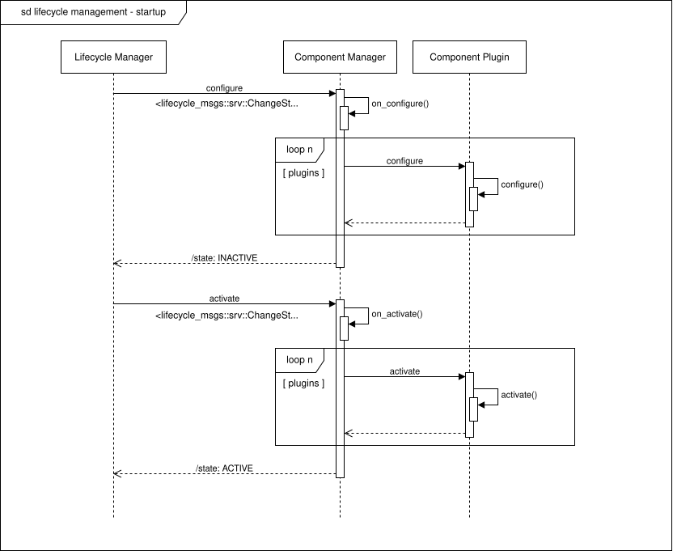
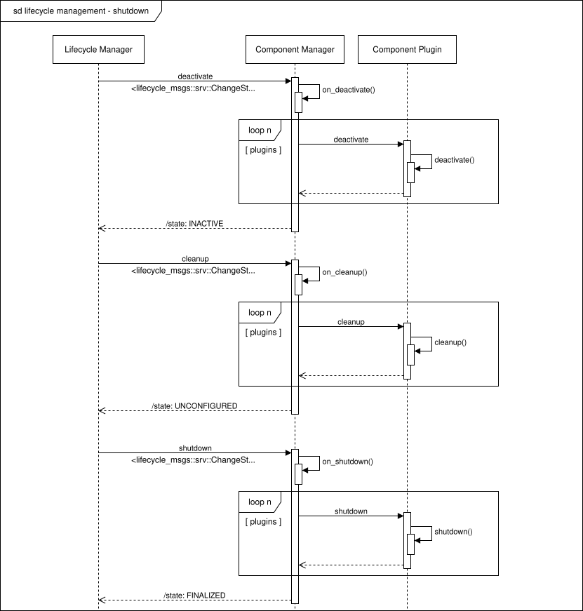
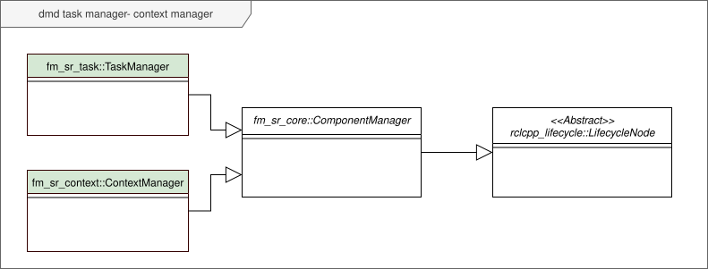
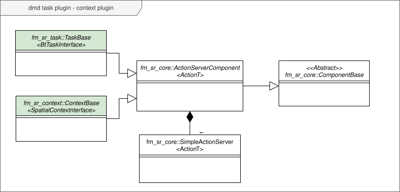

SIMROP core architecture
From an architectural point of view, the early development stages of the SIMROP project conceptualized and set up some fundamental key elements that are relevant in the context of the integration of modern flexible and intelligent systems. The fundamental setup of the overall architecture is mainly inspired on the design of the navigation stack for ROS2 (nav2).
Component manager node
The most important reusable element is a promising generalization proving to be very advantageous for several existing and future integrations of soft- and hardware components. The Component Manager serves as a robust backbone for an observable and controllable runtime management of the software components it maintains, and is designed with scalability in mind. The figure below shows the main features provided by the Component Manager:
{kind=link}

Figure 5 : Conceptual representation of a component manager node.
Plugin management
The component manager loads and supervises plugin instances. These plugins can accomodate the implemention of the actual business logic, where the component manager and the plugin boilerplate provide all the framing around. Depending on the actual application that builds upon the component manager foundation, the user designs the base class of their component plugin, its derivatives that harbor the actual implementation, and a suitable interface format. As the Component Manager itself is designed for scalability, the design of plugins deriving from the base component is a straightforward process, while a lot of structural overhead is abstracted away by the available framing itself.
Lifecycle management
The component manager is a ROS2 Lifecycle-enabled Node. It means that it operates according to its own Lifecycle State Machine, and state transitions are controlled from outside the component manager itself. Figure 6 shows the possible lifecycle states of the component manager:
Unconfigured: The component manager is started, but is not configured. It does not maintain any plugin, and does not expose any interface except the one for conducting the Lifecycle state management which is inherently included in the ROS2 Lifecycle Node base class.
Inactive: The component manager loaded and configured the plugins listed in the associated plugin_list.yaml file. Each of the loaded plugins exposes its own interfaces, but while they are discoverable they are still idle. Any request on the interfaces gets rejected.
Active: The component manager activated the interfaces to the plugins, and access to the implemented business logic is effectively exposed. Important to mention is that all the plugins expose their functionality simultaneously, and can be used in parallel.
Finalized: The component manager deactivated and unloaded all the plugins. When all internal resources are released the Lifecycle node itself shuts down.
{kind=link}

Figure 6 : State machine diagram representing the possible lifecycle states of a component manager node.
At any time while the application is running, selected plugins can be deactivated, reactivated, unloaded or reloaded without interfering with the operational plugins or active processes. A Lifecycle Manager - whether it is an automated implementation or a user manually controlling the lifecycle state transitions - has always control over the global state of the component manager, and is in charge of coordinating its controlled lifecycle transitions. Therefore, the lifecycle management enables to conduct a controlled startup and shutdown of the software stack.
{kind=link}

Figure 7 : Sequence diagram representing the lifecycle transitions conducting the controlled startup of a component manager node.
{kind=link}

Figure 8 : Sequence diagram representing the lifecycle transitions conducting the controlled shutdown of a component manager node.
Use of the Component Manager in the SIMROP skill–based framework
In the SIMROP architecture, the component manager is reused as the abstract base of both the task manager and the context manager (Figure 9). These are the two main lifecycle nodes where the skill–based framework is build upon, and by inheritance from the component manager, they operate following the same principles and use the same boilerplate implementations.
{kind=link}

Figure 9 : Domain model diagram representing the task manager and context manager as the two main instances of the component manager boilerplate in the SIMROP skill–based framework.
The task plugins supervised by the task manager and the context plugins supervised by the context manager both inherit from the same component plugin boilerplate. In the current implementation of the skill–based framework, the plugin base class is a templated ActionServerComponent, a plugin that will expose a single ROS2 action server.
Note
The current implementation of the SIMROP core framework only provides the ActionServerComponent and a ServiceServerComponent equivalent, which is a workable set of templates at this point but limits extensibility. A near future goal is to generalize towards a plugin boilerplate that accommodates an arbitrary number of ROS2 actions and ROS2 services.
{kind=link}

Figure 10 : Domain model diagram representing the task base and context base as the two main instances of the action server component plugin boilerplate in the SIMROP skill–based framework.